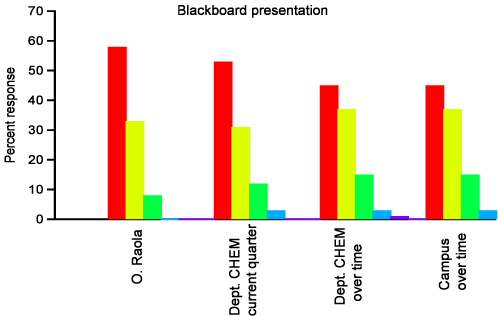

This evaluative parameter reflects an efficient use of the blackboard as presentation tool, even if more recently I feel more inclined towards the incorporation of new media in order to make better presentations, for example, PowerPoint presentations, including animations, simulations and videoclips.